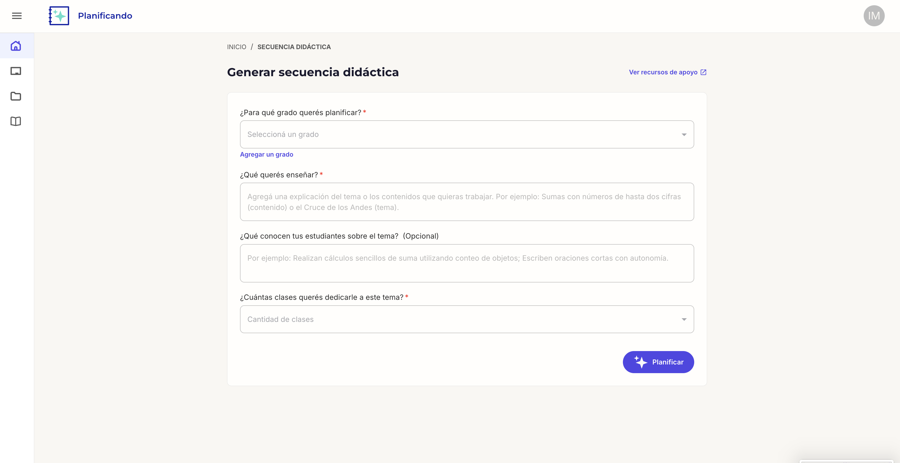
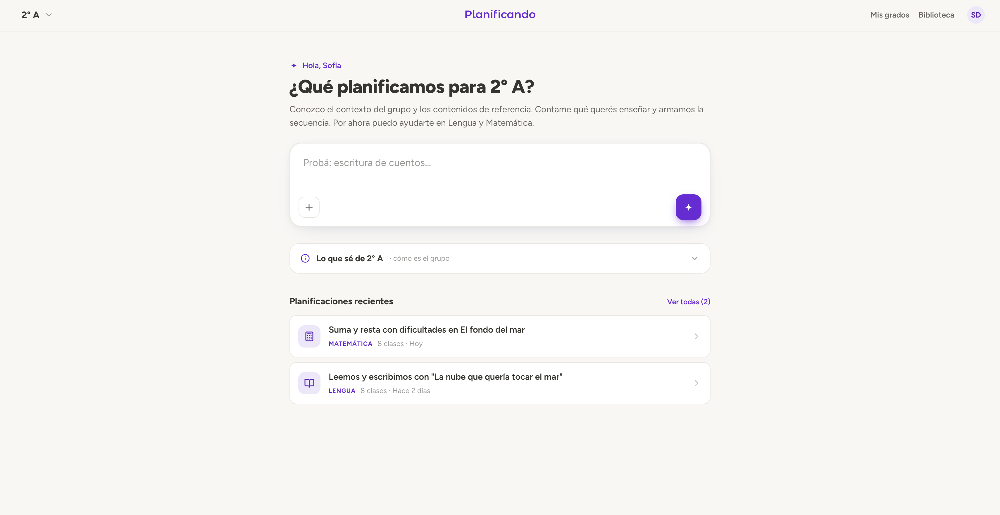

V1 was a form. The teacher selected a grade, described the topic, retyped what her students knew, picked a class count from a bare dropdown, and waited about 30 seconds for a document. Every generation started from zero. The plan list filled with near-duplicates because regenerating was the only way to iterate.
V1 organized the app around the generator: grades, plans and texts were parallel menu sections. In V2 each grade is a space. The home screen is the grade, plans live inside it, and the app opens where the teacher works.
The pedagogical team wanted the opposite: a grade picker as the landing screen, on the reasoning that a teacher should choose her group before anything else. It is a defensible model and it is how the curriculum is organized.
The distribution argued against it. Of the teachers with an active grade, 82% have exactly one. A picker would be a screen most teachers pass through with a single option on it.
What made the argument was not the average. Counting everyone, including our own team holding dozens of test grades, the figure is ambiguous enough for the picker to win. Excluding the team, it is not close. The decision turned on segmenting the data, not on having it.


V1 asked "¿Qué conocen tus estudiantes sobre el tema?" on every generation and discarded the answer. V2 stores a description of the group per grade — free text, in the teacher's words, plus files like student lists — and uses it for every plan. The empty state says why it's worth loading: "para que cada planificación salga a la medida."
V1 asked for a class count before showing anything. V2 inverts it: before generating, a review screen shows what the system understood (group, subject, topic, text) and recommends a class count the teacher can move on a slider. The same inversion drives the Lengua flow: instead of a 39-text library to browse, the system suggests two texts matched to the request, with the option to paste your own.
V1 had a separate edit mode and no way to ask for changes; iterating meant generating again, which is why the plan list filled with near-duplicates. In V2 the plan is editable in place, and a "¿Qué cambiamos?" panel takes change requests, with suggested changes as chips so the teacher learns what kinds of adjustments are possible.
Whether it displaced regeneration, I can't say yet. The panel fires a single event with no properties, and I can't tell from the data whether a change request and a regeneration are two acts or two names for the same one. That is an instrumentation gap of my own making, and it is first on the list to fix.
Decision 2 gave the product a place to keep context. It did not make teachers write it: in the version we tested in schools, six of seven plans left the context field blank. It was the last thing between the teacher and the result she came for, so she skipped it.
The obvious fix is better microcopy, or examples, or a friendlier placeholder. I moved the question instead.
Generating a plan takes close to a minute, and the teacher spends it watching a progress bar. So the question appears there now, one at a time, with three options and a free-text field. The screen states that the answer will not change the plan being generated: it feeds the group's context, which is what the next plan reads from. Answering is optional, the plan can arrive mid-question, and answered questions do not repeat.
45 teachers answered at least one question, with a median of 5 answers each.
V1 showed a checklist and a progress bar. The exploration compared combinable variants: streaming the plan as it writes, tips, curriculum grounding, skeleton screens, personalization signals. What shipped kept the progress bar and turned the wait into the place where the product asks for context.
V2 is live at v2.planificando.tech and has been instrumented since 11 August 2026. The first measured window covers 18 days: 82 new accounts, 64 of which created a grade, 51 of which generated at least one plan, and 28 of which exported one.
Adoption is concentrated. One institutional agreement accounts for most of the use, and accounts that arrive without an institution behind them activate at well under half that rate. Every percentage here should be read with that in mind.
Before writing this I audited the instrumentation behind these numbers, and a meaningful share of it did not survive. The skip-rate I was about to quote turned out to be almost entirely our own team's test accounts. The usage figures for the context questions included the team and had to be recomputed. Our dashboard's generation time measures the backend request rather than the wait a teacher actually sits through, which I found by timing it myself rather than by reading the board. Several decisions above have no number at all, because the event that would measure them was never instrumented.
One number did survive and points somewhere I did not expect: 92% of plans start from a topic the teacher typed, not one picked from the indexed curriculum. We index the curriculum and wrote 488 short classroom-language phrases from it, and teachers still write their own. That is the next problem.
Whether the accumulated context makes the next plan better is the question the whole redesign rests on, and it is still open.